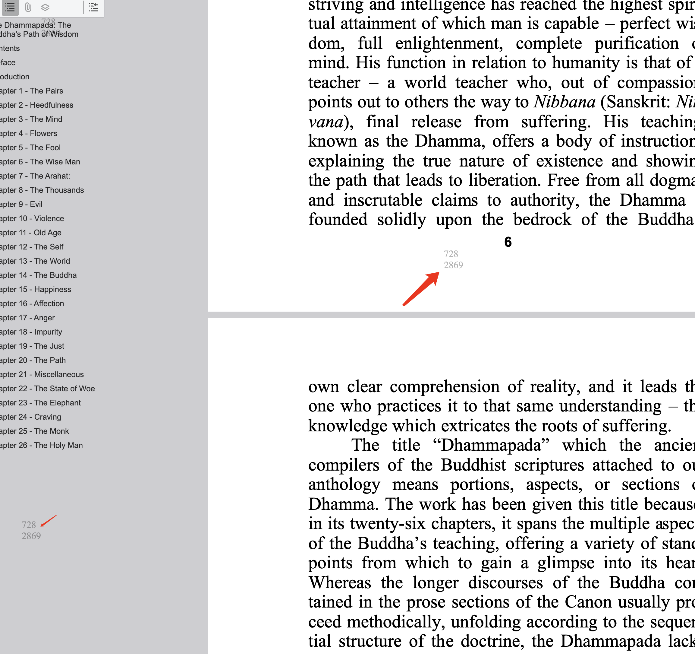
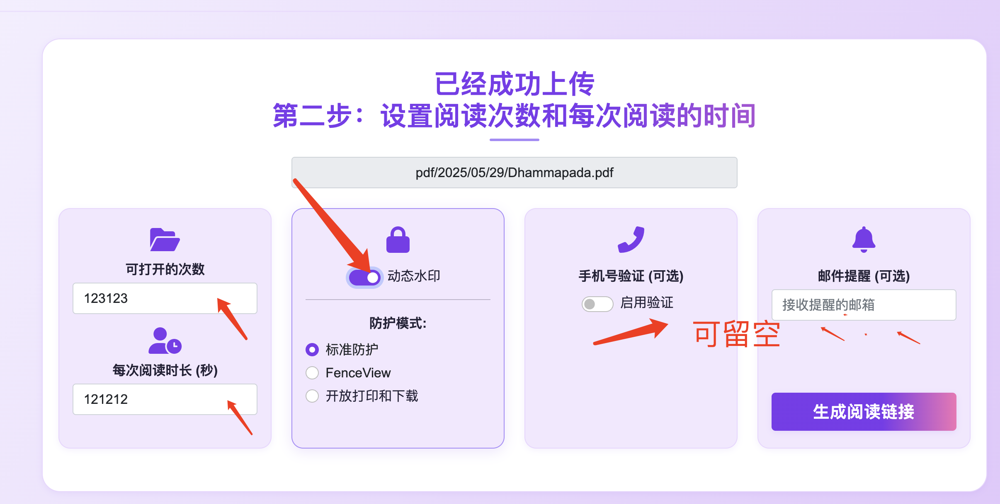
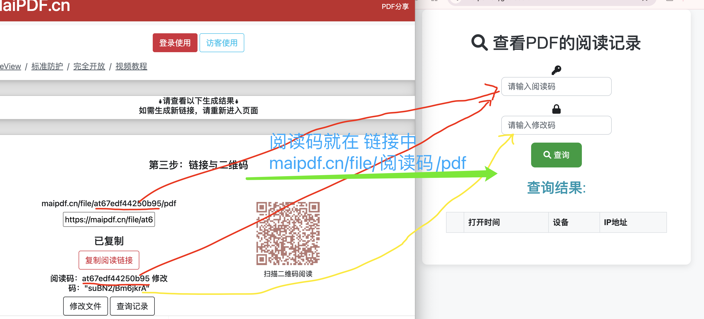

如何通过外发PDF获取访问者IP地址？
想知道谁在查看您分享的PDF文件吗？本文将详细介绍如何通过技术手段追踪PDF访问者的IP地址、访问时间和其他重要信息，帮助您更好地了解文档的传播情况。
🤔 为什么需要追踪PDF访问者？
常见应用场景
- 商务合作 - 了解合作伙伴是否查看了您的提案
- 求职应聘 - 确认HR是否打开了您的简历
- 学术研究 - 追踪论文或报告的阅读情况
- 法律文件 - 记录重要文件的访问证据
- 市场营销 - 分析宣传材料的传播效果

🔧 技术实现原理
方法一：智能链接追踪
将PDF文件上传到专业的追踪平台，生成带有追踪功能的智能链接。当有人点击链接时，系统会自动记录访问者信息。
工作原理：
- 上传PDF到追踪平台
- 系统生成唯一的追踪链接
- 访问者点击链接时触发追踪
- 后台记录IP地址、时间等信息

方法二：嵌入式追踪码
在PDF文件中嵌入隐藏的追踪元素，当文件被打开时自动收集访问信息。
技术特点：
- 隐蔽性强，用户不易察觉
- 可以追踪本地打开的文件
- 支持多种数据收集方式
方法三：动态水印追踪
为每个接收者生成带有唯一标识的PDF版本，通过水印信息追溯访问来源。
优势：
- 可以识别具体的泄露源头
- 提供法律证据支持
- 防止未授权传播
📊 可以获取哪些信息？
基础访问信息
- IP地址 - 访问者的网络地址
- 地理位置 - 基于IP的大致地理位置
- 访问时间 - 精确到秒的访问时间戳
- 访问次数 - 重复访问统计
高级技术信息
- 设备类型 - 手机、电脑、平板等
- 操作系统 - Windows、iOS、Android等
- 浏览器信息 - Chrome、Safari、Firefox等
- 屏幕分辨率 - 设备显示参数
- 网络运营商 - ISP提供商信息

🛠️ 具体实施步骤
第一步：选择合适的工具
市面上有多种PDF追踪工具可供选择，建议选择功能完善、安全可靠的平台。
选择标准：
- 数据安全和隐私保护
- 追踪精度和准确性
- 用户界面友好程度
- 价格和性价比
第二步：上传和配置
将您的PDF文件上传到选择的平台，并配置相应的追踪参数。
配置要点：
- 设置访问权限和安全级别
- 选择需要收集的数据类型
- 配置通知和报警机制
第三步：生成追踪链接
系统会为您的PDF生成专用的追踪链接和二维码。


第四步：分发和监控
将生成的链接分享给目标用户，然后通过后台实时监控访问情况。
⚖️ 法律和道德考量
⚠️ 重要提醒
- 合规性 - 确保符合当地的数据保护法规
- 透明度 - 在适当情况下告知用户追踪行为
- 目的正当 - 仅用于合法和正当的目的
- 数据安全 - 妥善保护收集到的个人信息
✅ 合理用途
- 保护知识产权
- 商业合作跟踪
- 学术研究统计
- 安全审计需要
❌ 需要谨慎
- 侵犯他人隐私
- 恶意监控行为
- 违法收集信息
- 商业间谍活动
🔒 安全和隐私保护
数据保护措施
- 加密传输 - 所有数据传输采用HTTPS加密
- 访问控制 - 严格的用户权限管理
- 数据匿名化 - 在可能的情况下对敏感信息进行匿名化处理
- 定期清理 - 自动删除过期的追踪数据
💡 最佳实践建议
- 明确追踪目的，避免过度收集信息
- 定期审查和清理不必要的数据
- 建立数据使用和共享政策
- 提供用户选择退出的机制
📈 高级应用技巧
提高追踪效果的方法
- 多渠道分发 - 通过不同渠道分享，对比效果
- A/B测试 - 测试不同版本的文档表现
- 时间分析 - 分析最佳发送和查看时间
- 地域分析 - 了解不同地区的接受度
数据分析和应用
- 创建访问热力图，了解关注重点
- 分析访问模式，优化发送策略
- 建立用户画像，精准定位目标群体
- 跟踪转化效果，评估文档价值

🎯 实际应用案例
案例一：商务提案追踪
某公司向潜在客户发送商务提案PDF，通过追踪发现：
- 客户在收到后2小时内查看了文档
- 总共查看了3次，每次停留15分钟
- 从公司网络访问，说明内部进行了讨论
- 最后一次查看后第二天收到了合作意向回复
案例二：学术论文传播分析
研究人员追踪论文预印本的传播情况：
- 发现论文在社交媒体分享后访问量激增
- 主要访问者来自欧美高校和研究机构
- 移动端访问占比60%，说明碎片化阅读趋势
- 为后续正式发表提供了宝贵的反馈数据
🚀 开始您的PDF追踪之旅
通过合理使用PDF追踪技术，您可以获得宝贵的文档访问洞察，提高工作效率和决策质量。记住要始终遵守相关法律法规，尊重他人隐私，将这项技术用于正当和合法的目的。
立即开始体验智能PDF追踪，让您的每一份文档都能提供有价值的数据反馈！